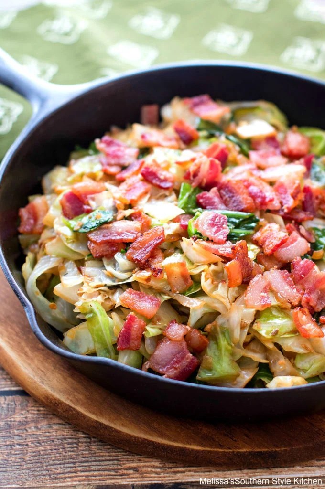

World's Best Lasagna

This Southern Fried Cabbage recipe is simple deliciousness. In it, green cabbage is cooked until tender along with sweet onion and bacon, making it the epitome of down- home eats. It’s that good for the soul type of food that won’t break the bank.
Submitted by: Melissa's Southern Style Kitchen
Prep Time: 15 mins
Cook Time: 20 mins
Total Time: 35 mins
Servings: 6
Ingredients
- 1/2 lb thick cut bacon cut into 1/2 inch pieces
- 1 medium sweet onion i.e. Vidalia or similar diced
- 3 cloves garlic minced
- 1/4 tsp fennel seed (optional)
- 1 3 lb green cabbage washed, cored, and chopped
- 1 tsp salt may adjust to taste
- 1 tsp onion powder
- 1 tsp granulated garlic
- 1/2 tsp crushed red pepper flakes may adjust to taste
- 1/2 tsp freshly ground black pepper
Directions
- Step 1
- In a large skillet or dutch oven cook bacon over medium-high heat until crisp. Remove to paper towels to drain using a slotted spoon, reserving 4 Tbsp drippings in skillet.
- Step 2
- To the drippings add onion. Saute over medium-high for 3 minutes or until beginning to brown then add garlic and fennel seed, if using. Saute for 1 minute.
- Step 3
- Add cabbage to skillet. The skillet will be full but, the cabbage will shrink as it cooks. Once it begins to shrink, add salt, onion powder, granulated garlic, pepper flakes and black pepper. Mix well.
- Step 4
- Cook over medium heat stirring occasionally until cabbage has softened and is browning, about 15-20 minutes.
- Step 5
- Crumble bacon and add back to the cabbage or use to garnish the top.
- Step 6
- Serve and enjoy.
Nutrition Facts
Per serving: Calories 236; Total Fat 15g; Saturated Fat 5g; Polyunsaturated Fat 2g; Cholesterol 25mg; Monounsaturated Fat 7g; Trans Fat 1g; Sodium 687mg; Total Carbohydrate 19g; Dietary Fiber 6g; Total Sugars 11g; Protein 5g; Vitamin A 85iu; Vitamin C 76mg; Calcium 127mg; Iron 2mg; Potassium 721mg